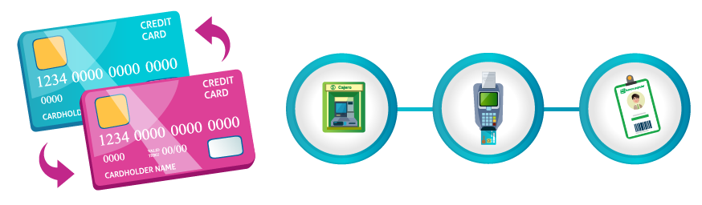

Un modelo de prevención de fraudes es el conjunto de políticas, procedimientos, normas, herramientas, roles y responsabilidades que fortalecen la Cultura Organizacional y se integran para prevenir, detectar, enfrentar y dar respuesta oportuna al fraude en la Entidad.
Las técnicas de prevención de fraude no garantizan que el fraude no se cometa, pero son la primera línea de actuación para minimizar el riesgo, por esto es importante identificar, medir, controlar y monitorear todos los eventos que puedan llevar a las organizaciones a tener un riesgo de pérdida monetaria o reputacional y sanciones de los entes de control.
Regulaciones relacionadas con el riesgo de fraude
Inicio
La unidad de prevención de fraudes debe cumplir con varias regulaciones locales.
Pasa el mouse sobre el dato de interés
Dato de interés
Pulsa los botones para ampliar la información.
Circular Básica Jurídica de la SFC
La Circular Básica Jurídica de la Superintendencia Financiera de Colombia incluye la siguiente información:
Capítulo I
Capítulo II
Capítulo IX
Capítulo XII
Decreto 578 del MinCIT
El Decreto 578 del MinCIT hace referencia a la protección de los derechos de los consumidores y regulación del control de calidad de bienes y servicios ofrecidos y prestados a la comunidad, así como la información que debe suministrarse al público en su comercialización.
Tipología del fraude
Actualmente se pueden presentar los siguientes tipos de fraude:
Modalidades de fraude
Inicio
Pulsa los botones para conocer cada una de las modalidades de fraude.
Cambiazo
Táctica fraudulenta diseñada para apropiarse del chip de una tarjeta de crédito o débito, robar la información y hacer compras no autorizadas.
El cambiazo puede suceder en las siguientes situaciones:

Swapping
Práctica fraudulenta en la que los delincuentes solo necesitan conocer número de celular, fecha de nacimiento y dirección para suplantar a una persona frente a su compañía telefónica. Luego solicitan la copia de la SIM a una nueva dirección.
Vishing
En el vishing, los delincuentes intentan ganar la confianza de la víctima llamando y haciéndose pasar por funcionarios del banco; para lograrlo, le darán información parcial de sus productos financieros o datos personales que obtuvieron usando programas maliciosos e ingeniería social.
Phishing
En el phishing, a través de un correo electrónico que incluye un enlace a un sitio fraudulento, se suplantan entidades financieras confiables, agencias gubernamentales o plataformas de pagos en línea, y se solicita a la víctima que actualice sus datos confidenciales, asegurando que existen problemas con sus cuentas bancarias, una transacción o un envío. Una vez la víctima entrega la información, los criminales pueden adueñarse de su dinero.
Smishing
El smishing es una modalidad de fraude que consiste en el envío de mensajes de texto al teléfono móvil, los cuales contienen enlaces que conducen a sitios fraudulentos o infectados, con el fin de obtener información personal de las víctimas y cometer estafas financieras.
Recomendaciones para evitar ser víctima de fraude
Para evitar el fraude se deben tener en cuenta las siguientes consideraciones:
Actividad
¡Hemos encontrado a Gerard! Ahora debemos recuperar los tesoros de la ciudad aplicando todo lo que hemos aprendido.
Pulsa el botón "Ir a las preguntas" para resolver algunas actividades.
IR A LAS PREGUNTAS
Las entidades que rigen y garantizan el cumplimiento de los reglamentos asociados a temas de fraude son la Superintendencia Financiera de Colombia (SFC) y el Ministerio de Comercio, Industria y Turismo (MinCIT).
Canales, medios, seguridad y calidad en el manejo de información en la prestación de servicios financieros.
Actuaciones ante la Superintendencia de Colombia. Establece instrucciones generales, aplicables, deberes y responsabilidades de las entidades vigiladas.
Obligaciones especiales de las entidades vigiladas.
Requerimientos mínimos de seguridad y calidad para la realización de operaciones.
Suplantación
Situación en la que se completa una solicitud con información legítima de una persona real, aunque esta fue utilizada sin el consentimiento del tercero. Excluye todas las pérdidas de crédito por fraude directo.
Pérdida o robo
Cuando el tarjetahabiente extravía su tarjeta o la tarjeta es robada por un tercero.
Falsificación de banda (skimming)
Cuando se comete fraude en una transacción en persona a raíz del uso de una tarjeta con banda copiada.
Tarjeta no presente
Situación en la que un cliente usa una tarjeta para hacer una compra por internet o telefónicamente.
Tarjeta no recibida
Situación en la que una tarjeta enviada a un cliente es interceptada y usada de manera ilícita.
Introducción Manual (MOTO)
Cuando el número de la tarjeta de crédito se introduce manualmente (por teléfono o en una interacción en persona).
Posesión de cuenta
Pérdidas por fraude externo debido a la adquisición/uso no autorizado de una cuenta legítimamente establecida (excluye las pérdidas relacionadas con todos los productos de la tarjeta de crédito y débito / cajero automático).
Fraude en cheque
Pérdidas por fraude externo debido a cheques perdidos o robados.
Cheques alterados con firmas falsificadas por las diferentes modalidades como calco, scanner, imitación, etc.
Fraude de primera parte por parte del cliente que aprovecha el canje para hacer uso de los fondos inexistentes en una cuenta corriente u otra cuenta bancaria.
Tarjeta falsa
Cuando se comete fraude en una transacción en persona a raíz del uso de una tarjeta clasificada o modificada manualmente.
Fraude interno
Evento de fraude que implica al menos una parte interna, ya sea un empleado permanente, temporal, trabajador contingente o con contrato directo. Pérdidas por fraude con participación por lo menos de una parte interna.
En un cajero electrónico mientras se realiza alguna consulta o transacción.
En un establecimiento comercial mientras se entrega la tarjeta para procesar el pago.
Cuando los ladrones aparentan ser funcionarios de la entidad financiera para robar.
No perder de vista las tarjetas crédito o débito al momento de efectuar pagos.
No permitir la visualización de la clave de seguridad al momento de digitarla.
No aceptar ayuda de terceros cuando se realicen transacciones en cajeros automáticos.
El Banco nunca contactará para solicitar información de seguridad de productos financieros (claves, fechas de vencimiento, códigos de seguridad y OTP).
El Banco en el momento no posee campañas de devolución de IVA, auxilios o fortalecimiento de procesos de seguridad.
No facilitar información bancaria sensible por medio telefónico o digital.
El reembolso de gastos por bebidas alcohólicas deberá ser aprobado por el jefe inmediato, por quien haga sus veces o por quien cada entidad designe, y, por lo menos, deberá cumplir con las políticas de reembolso de gastos por este concepto y asegurando la proporcionalidad del gasto.
Si el reembolso es solicitado por la Presidencia, será autorizado por la Vicepresidencia Financiera.
El presidente, quien haga sus veces o quienes este delegue podrán aprobar: Regalo o invitación superior a 4 SMMLV
Los vicepresidentes, quienes hagan sus veces o quienes estos deleguen podrán aprobar: Regalo o invitación entre 2 y 4 SMMLV
Los gerentes o quienes hagan sus veces podrán aprobar: Regalo o invitación entre 0,5 y hasta 2 SMMLV
Diligenciar los formatos Solicitud para otorgar o recibir regalos e invitaciones y Cierre Recibo y Otorgamiento de Regalos e Invitaciones, y junto con su aprobación entregarlos a la Dirección ABAC para emisión de concepto.
Reportar en la Bitácora de registro, publicada en la página de Enlace Virtual.
Queda expresamente prohibido utilizar figuras como publicidad, pago de eventos a favor de terceros, comodatos, regalos, invitaciones, publicidad, patrocinios y/o donaciones como parte de las reciprocidades con clientes.
Programas de fidelización no se consideran reciprocidades y deberán cumplir con los mínimos requeridos desde el punto de vista NIIF para su registro como tal.
El ofrecimiento de beneficios a clientes debe estar soportado y documentado en un análisis de relación costo/beneficio, de cara al portafolio completo del cliente. Si el retorno realizado con un cliente se desfasa por debajo de la media esperada, se debe contar con autorización expresa de la instancia superior que corresponda.
Está prohibido que el Banco Popular y sus filiales realicen comodatos a clientes o proveedores. Si por alguna consideración excepcional contractual se hace necesario otorgar bienes bajo esta figura, todos, sin excepción y de manera individual, deben ser previamente autorizados por la Gerencia de Cumplimiento – Dirección ABAC, basados en documentación robusta de cada operación suministrada por la primera línea de defensa a cargo de dicha transacción.